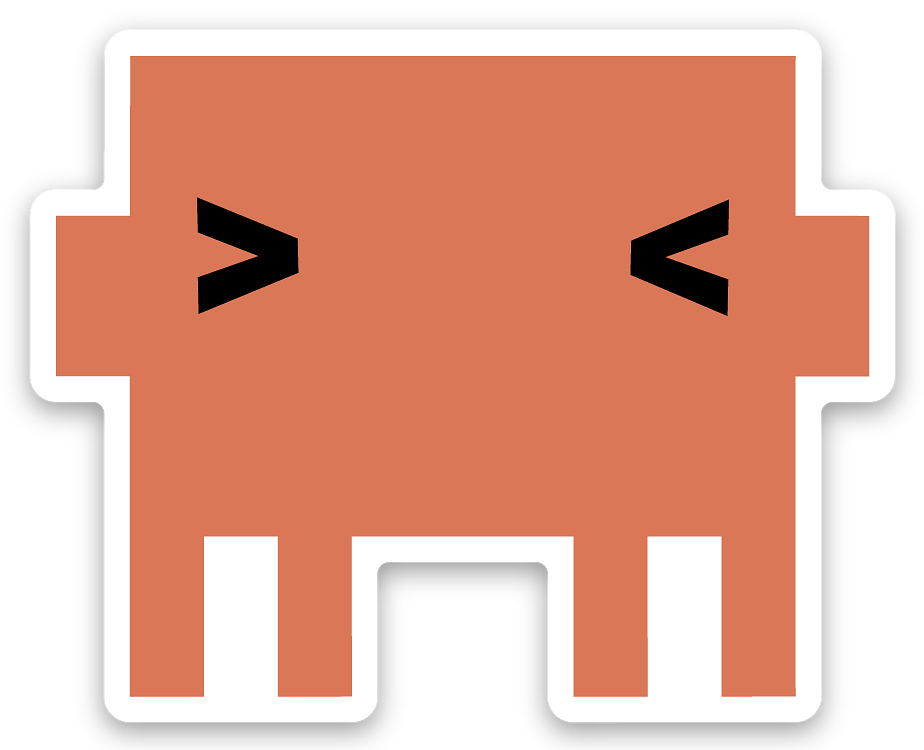
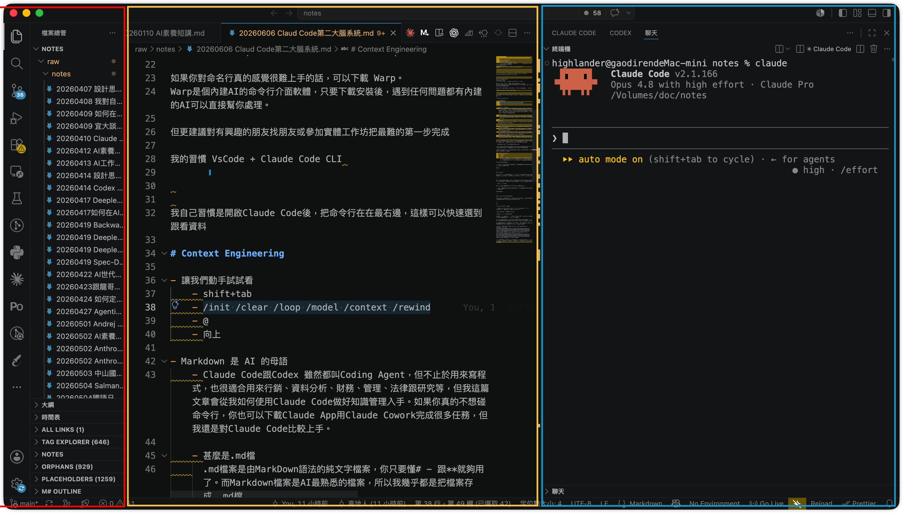
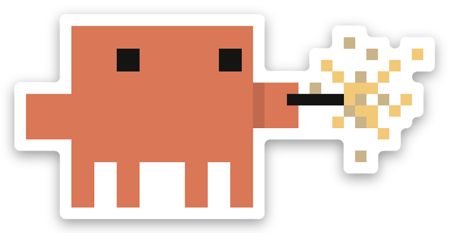
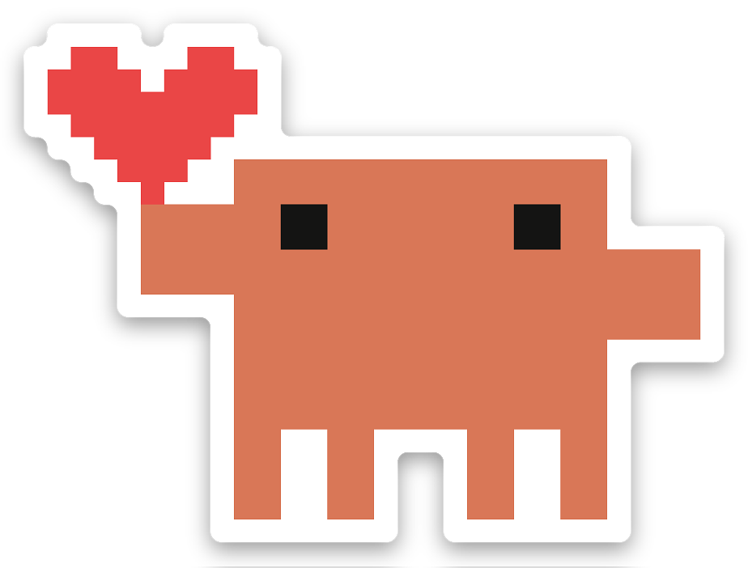

STEP 01
把 Claude Code 變成你的第二大腦

講者：中山國小林穎俊
WORKSHOP MAP
工作坊目標
工作坊目標：
- 認識 Claude Code
- 建立第二大腦
- 最後做出自己的 Skill
學員動作
先建立整體地圖。
STEP 03
它不只是聊天 AI
聊天 AI：一問一答
Claude Code：在你電腦裡面工作的 AI agent

STEP 04
Claude Code 能做什麼
- 能操控你的電腦：讀檔、改檔、整理資料夾
CLAUDE.md會被記住，不必每次重講- 用 Skill 學會你的專業流程，可重複又穩定
- 連接各種工具
RUN 05
安裝 Claude Code 及 VsCode
請依據 Anthropic及 VsCode 官方網站安裝
- 最難的一關
RUN 06
下載範例檔案
先下載範例檔案
GitHub：
指令：
git clone https://github.com/gatelynch/llm-knowledge-base.gitRUN 07
安裝前先理解一件事
工具不是課程核心。
不要背指令，要思考你如何整理資訊。
RUN 08
第一次進入資料夾
進入範例知識庫：
cd llm-knowledge-base
claudeSTEP 09
我的工作畫面
建議工作畫面：
- 左邊：檔案總管 / VS Code
- 右邊：Claude Code
- 中間：筆記或程式

RUN 10
動手試試看
先熟悉互動：
@引用檔案- 向上鍵叫回上一句
Shift + Tab切換模式
RUN 11
常用指令
常用指令：
/init/clear/context/model/rewind
RUN 12
`/init` 是什麼
/init
讓 Claude Code 認識這個資料夾。
RUN 13
`/clear` 是什麼
/clear
清掉當前對話，避免脈絡混亂。
RUN 14
`/context` 是什麼
/context
可以即時查看 context window 使用情況。
STEP 15
Markdown 是 AI 的母語
- 純文字檔，副檔名 .md
- 我幾乎把所有資料都轉成 .md
- Markdown 只要先懂三個符號：
# 標題
- 清單
**重點**STEP 16
CLAUDE.md 是 給AI的使用說明書
CLAUDE.md
不只是設定檔，更是給AI的說明書。
它告訴 AI：
- 我是誰
- 怎麼工作
- 資料怎麼放
- 什麼不能動
- 怎樣算做得好
STEP 17
寫 CLAUDE.md 的四個原則
四個原則：
- 不要太長
- 隨錯誤迭代
- 模組化
- 和 Claude Code 一起寫
STEP 18
讓它知道我是誰
先讓 AI 知道：
- 我的身分
- 我的工作
- 我的偏好
- 我的寫作風格
- 我的常見產出
RUN 19
將資料匯入
- 將雲端硬碟或Facebook貼文下載(哪些東西不應該放進來？)
- 用 pandoc 或 markitdown 將檔案轉成 md
- 直接叫Claude Code 轉成md
- 用
/convert-to-md把 EPUB / PDF / DOCX、甚至 Facebook 匯出的 JSON 一鍵轉成 Markdown
RUN 20
不要什麼都編譯
可以備份，不一定要編譯。
特別小心：
- Facebook 舊貼文
- AI 生成內容
- 不再代表現在想法的資料（我真的想讓Claude知道我之前有多笨嗎？）
STEP 21
如何標註資料
- AI生成
- 網路蒐集
- 自己寫的
-自己分、或叫 Claude Code 分都行，但一定要區分來源：
STEP 22
我的四層架構
資料夾規則：
- raw：原始資料
- wiki：編譯知識
- brainstorming：思考探索
- artifacts：對外成品
STEP 23
第二大腦不是資料庫
第二大腦不是保存一切。
第二大腦是讓重要資料重新參與思考。
NOTE 24
Git 是時光機
Git 是你的時光機。
它讓你知道：
- 改了什麼
- 何時改的
- 必要時怎麼回去
NOTE 25
Evaluation
沒有評估標準，AI 只能猜。
NOTE 26
Context Engineering
AI 不是無限記憶。
Context Engineering就是幫 AI 看見該看的東西。
RUN 27
Skill 是什麼
Skill 是把你會重複做的事，變成可執行流程。
RUN 28
Skill 不是越多越好
Skill 不是越多越好。
只把真的反覆需要的任務做成 Skill。
RUN 29
工作流 Skill
工作流 Skill 範例：
- 整理會議記錄
- 編輯文章
- 把資料轉 Markdown
- 建立學習專案
- 把課程想法變簡報
RUN 30
領域知識 Skill
領域知識 Skill 範例：
- 課程設計檢核
- 論證審查
- SDD
- TDD
- 研究摘要評估
STEP 31
ask-me：請 AI 先問清楚
ask-me
一次只問一個問題，直到共同理解。
範例
---
name: ask-me
description: 針對計畫或文章進行嚴謹訪談，直到達成共同理解。
---
請針對此想法的各個面向對我進行訪談。
一次只問一個問題。
如果問題可以透過探索資料夾回答，請先探索資料夾。RUN 32
把簡報製作流程變成 Skill
提示詞
@某個檔案 請幫我把這個課程想法變成簡報，請你先對我提問釐清我的想法之後，才開始用HTML製作簡潔溫暖的簡報風格這個過程能不能轉成 Skill？
任務：嘗試將文章變成簡報。

RUN 33
做一個自己的 Skill
請用 /skill-creator 作一個自己的skill
RUN 34
完成檢核
我已經會：
- 理解 Claude Code 的概念
- 使用基本指令
- 建立 CLAUDE.md
- 建立 第二大腦系統
- 寫出 Skill 草稿
RUN 35
下一步的行動
不要立刻將所有東西丟進去。
先讓一個流程跑起來。
可以嘗試的任務：
- 匯入Gmail / 手機備忘錄
- 分析數據
- 自動抓取資料
STEP 36
結語
你不是在學會操作 Claude Code。
你是在建立一個能和 AI 一起思考的工作環境。
